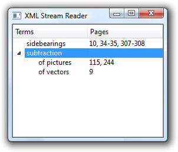

XML (eXtensible Markup Language) is a general-purpose text file format that is popular for data interchange and data storage. It was developed by the World Wide Web Consortium (W3C) as a lightweight alternative to SGML (Standard Generalized Markup Language). The syntax is similar to HTML, but XML is a metalanguage and as such does not mandate specific tags, attributes, or entities. The XML-compliant version of HTML is called XHTML.
For the popular SVG (Scalable Vector Graphics) XML format, the QtSvg module provides classes that can load and render SVG images. For rendering documents that use the MathML (Mathematical Markup Language) XML format, the QtMmlWidget from Qt Solutions can be used.
For general XML processing, Qt provides the QtXml module, which is the subject of this chapter.[*] The QtXml module offers three distinct APIs for reading XML documents:
[*] Qt 4.4 is expected to include additional high-level classes for handling XML, providing support for XQuery and XPath, in a separate module called QtXmlPatterns.
QXmlStreamReader is a fast parser for reading well-formed XML.
DOM (Document Object Model) converts an XML document into a tree structure, which the application can then navigate.
SAX (Simple API for XML) reports "parsing events" directly to the application through virtual functions.
The QXmlStreamReader class is the fastest and easiest to use and offers an API that is consistent with the rest of Qt. It is ideal for writing one-pass parsers. DOM's main benefit is that it lets us navigate a tree representation of the XML document in any order, allowing us to implement multi-pass parsing algorithms. Some applications even use the DOM tree as their primary data structure. SAX is provided mainly for historical reasons; using QXmlStreamReader usually leads to simpler and faster code.
For writing XML files, Qt also offers three options:
Using QXmlStreamWriter is by far the easiest approach, and is more reliable than hand-generating XML. Using DOM to produce XML really makes sense only if a DOM tree is already used as the application's primary data structure. All three approaches to reading and writing XML are shown in this chapter.
Using QXmlStreamReader is the fastest and easiest way to read XML in Qt. Because the parser works incrementally, it is particularly useful for finding all occurrences of a given tag in an XML document, for reading very large files that may not fit in memory, and for populating custom data structures to reflect an XML document's contents.
The QXmlStreamReader parser works in terms of the tokens listed in Figure 16.1. Each time the readNext() function is called, the next token is read and becomes the current token. The current token's properties depend on the token's type and are accessible using the getter functions listed in the table.
| Token Type | Example | Getter Functions |
|---|---|---|
| StartDocument | N/A | isStandaloneDocument() |
| EndDocument | N/A | isStandaloneDocument() |
| StartElement | <item> | namespaceUri(), name(), attributes(), namespaceDeclarations() |
| EndElement | </item> | namespaceUri(), name() |
| Characters | AT&T | text(), isWhitespace(), isCDATA() |
| Comment | <!-- fix --> | text() |
| DTD | <!DOCTYPE ...> | text(), notationDeclarations(), entityDeclarations() |
| EntityReference | ™ | name(), text() |
| ProcessingInstruction | <?alert?> | processingInstructionTarget(), processingInstructionData() |
| Invalid | >&<! | error(), errorString() |
Consider the following XML document:
<doc>
<quote>Einmal ist keinmal</quote>
</doc>If we parse this document, each readNext() call will produce a new token, with extra information available using getter functions:
StartDocument StartElement (name() == "doc") StartElement (name() == "quote") Characters (text() == "Einmal ist keinmal") EndElement (name() == "quote") EndElement (name() == "doc") EndDocument
After each readNext() call, we can test for the current token's type using isStartElement(), isCharacters(), and similar functions, or simply using state().
We will review an example that shows how to use QXmlStreamReader to parse an ad hoc XML file format and render its contents in a QTreeWidget. The format we will parse is that of a book index, with index entries and sub-entries. Here's the book index file that is displayed in the QTreeWidget in Figure 16.2:
<?xml version="1.0"?>
<bookindex>
<entry term="sidebearings">
<page>10</page>
<page>34-35</page>
<page>307-308</page>
</entry>
<entry term="subtraction">
<entry term="of pictures">
<page>115</page>
<page>244</page>
</entry>
<entry term="of vectors">
<page>9</page>
</entry>
</entry>
</bookindex>
We will begin by looking at an extract from the application's main() function, to see how the XML reader is used in context, and then we will look at the reader's implementation.
int main(int argc, char *argv[])
{
QApplication app(argc, argv);
QStringList args = QApplication::arguments();
...
QTreeWidget treeWidget;
...
XmlStreamReader reader(&treeWidget);
for (int i = 1; i < args.count(); ++i)
reader.readFile(args[i]);
return app.exec();
}The application shown in Figure 16.2 begins by creating a QTreeWidget. It then creates an XmlStreamReader, passing it the tree widget and asking it to parse each file specified on the command line.
class XmlStreamReader
{
public:
XmlStreamReader(QTreeWidget *tree);
bool readFile(const QString &fileName);
private:
void readBookindexElement();
void readEntryElement(QTreeWidgetItem *parent);
void readPageElement(QTreeWidgetItem *parent);
void skipUnknownElement();
QTreeWidget *treeWidget;
QXmlStreamReader reader;
};The XmlStreamReader class provides two public functions: the constructor and parseFile(). The class uses a QXmlStreamReader instance to parse the XML file, and populates the QTreeWidget to reflect the XML data that is read. The parsing is done using recursive descent:
readBookindexElement() parses a <bookindex>...</bookindex> element that contains zero or more <entry> elements.
readEntryElement() parses an <entry>...</entry> element that contains zero or more <page> elements and zero or more <entry> elements nested to any depth.
readPageElement() parses a <page>...</page> element.
skipUnknownElement() skips an unrecognized element.
We will now look at the XmlStreamReader class's implementation, beginning with the constructor.
XmlStreamReader::XmlStreamReader(QTreeWidget *tree)
{
treeWidget = tree;
}The constructor is used only to establish which QTreeWidget the reader should use. All the action takes place in the readFile() function (called from main()), which we will look at in three parts.
bool XmlStreamReader::readFile(const QString &fileName)
{
QFile file(fileName);
if (!file.open(QFile::ReadOnly | QFile::Text)) {
std::cerr << "Error: Cannot read file " << qPrintable(fileName)
<< ": " << qPrintable(file.errorString())
<< std::endl;
return false;
}
reader.setDevice(&file);The readFile() function begins by trying to open the file. If it fails, it outputs an error message and returns false. If the file is opened successfully, it is set as the QXmlStreamReader's input device.
reader.readNext();
while (!reader.atEnd()) {
if (reader.isStartElement()) {
if (reader.name() == "bookindex") {
readBookindexElement();
} else {
reader.raiseError(QObject::tr("Not a bookindex file"));
}
} else {
reader.readNext();
}
}The QXmlStreamReader's readNext() function reads the next token from the input stream. If a token is successfully read and the end of the XML file has not been reached, the function enters the while loop. Because of the structure of the index files, we know that inside this loop there are just three possibilities: A <bookindex> start tag has just been read, another start tag has been read (in which case the file is not a book index), or some other token has been read.
If we have the correct start tag, we call readBookindexElement() to continue processing. Otherwise, we call QXmlStreamReader::raiseError() with an error message. The next time atEnd() is called (in the while loop condition), it will return true. This ensures that parsing stops as soon as possible after an error has been encountered. The error can be queried later by calling error() and errorString() on the QFile. An alternative would have been to return right away when we detect an error in the book index file. Using raiseError() is usually more convenient, because it lets us use the same error-reporting mechanism for low-level XML parsing errors, which are raised automatically when QXmlStreamReader runs into invalid XML, and for application-specific errors.
file.close();
if (reader.hasError()) {
std::cerr << "Error: Failed to parse file "
<< qPrintable(fileName) << ": "
<< qPrintable(reader.errorString()) << std::endl;
return false;
} else if (file.error() != QFile::NoError) {
std::cerr << "Error: Cannot read file " << qPrintable(fileName)
<< ": " << qPrintable(file.errorString())
<< std::endl;
return false;
}
return true;
}Once the processing has finished, the file is closed. If there was a parser error or a file error, the function outputs an error message and returns false; otherwise, it returns true to report a successful parse.
void XmlStreamReader::readBookindexElement()
{
reader.readNext();
while (!reader.atEnd()) {
if (reader.isEndElement()) {
reader.readNext();
break;
}
if (reader.isStartElement()) {
if (reader.name() == "entry") {
readEntryElement(treeWidget->invisibleRootItem());
} else {
skipUnknownElement();
}
} else {
reader.readNext();
}
}
}The readBookindexElement() is responsible for reading the main part of the file. It starts by skipping the current token (which at this point can be only a <bookindex> start tag) and then loops over the input.
If an end tag is read, it can be only the </bookindex> tag, since otherwise, QXmlStreamReader would have reported an error (UnexpectedElementError). In that case, we skip the tag and break out of the loop. Otherwise, we should have a top-level index <entry> start tag. If this is the case, we call readEntryElement() to process the entry's data; if not, we call skipUnknownElement(). Using skipUnknownElement() rather than calling raiseError() means that if we extend the book index format in the future to include new tags, this reader will continue to work, since it will simply ignore the tags it does not recognize.
The readEntryElement() takes a QTreeWidgetItem * argument that identifies a parent item. We pass QTreeWidget::invisibleRootItem() as the parent to make the new items root items. In readEntryElement(), we will call readEntryElement() recursively, with a different parent.
void XmlStreamReader::readEntryElement(QTreeWidgetItem *parent)
{
QTreeWidgetItem *item = new QTreeWidgetItem(parent);
item->setText(0, reader.attributes().value("term").toString());
reader.readNext();
while (!reader.atEnd()) {
if (reader.isEndElement()) {
reader.readNext();
break;
}
if (reader.isStartElement()) {
if (reader.name() == "entry") {
readEntryElement(item);
} else if (reader.name() == "page") {
readPageElement(item);
} else {
skipUnknownElement();
}
} else {
reader.readNext();
}
}
}
The readEntryElement() function is called whenever an <entry> start tag is encountered. We want a tree widget item to be created for every index entry, so we create a new QTreeWidgetItem, and set its first column's text to be the entry's term attribute's text.
Once the entry has been added to the tree, the next token is read. If it is an end tag, we skip the tag and break out of the loop. If a start tag is encountered, it will be an <entry> tag (signifying a sub-entry), a <page> tag (a page number for this entry), or an unknown tag. If the start tag is a sub-entry, we call readEntryElement() recursively. If the tag is a <page> tag, we call readPageElement().
void XmlStreamReader::readPageElement(QTreeWidgetItem *parent)
{
QString page = reader.readElementText();
if (reader.isEndElement())
reader.readNext();
QString allPages = parent->text(1);
if (!allPages.isEmpty())
allPages += ", ";
allPages += page;
parent->setText(1, allPages);
}The readPageElement() function is called whenever we get a <page> tag. It is passed the tree item that corresponds to the entry to which the page text belongs. We begin by reading the text between the <page> and </page> tags. On success, the readElementText() function will leave the parser on the </page> tag, which we must skip.
The pages are stored in the tree widget item's second column. We begin by extracting the text that is already there. If the text is not empty, we append a comma to it, ready for the new page text. We then append the new text and update the column's text accordingly.
void XmlStreamReader::skipUnknownElement()
{
reader.readNext();
while (!reader.atEnd()) {
if (reader.isEndElement()) {
reader.readNext();
break;
}
if (reader.isStartElement()) {
skipUnknownElement();
} else {
reader.readNext();
}
}
}Finally, when unknown tags are encountered, we keep reading until we get the unknown element's end tag, which we also skip. This means that we will skip over well-formed but unrecognized elements, and read as much of the recognizable data as possible from the XML file.
The example presented here could be used as the basis for similar XML recursive descent parsers. Nonetheless, sometimes implementing a parser like this can be tricky, if a readNext() call is missing or out of place. Some programmers address the problem by using assertions in their code. For example, at the beginning of readBookindexElement(), we could add the line
Q_ASSERT(reader.isStartElement() && reader.name() == "bookindex");
A similar assertion could be made in the readEntryElement() and readPageElement() functions. For skipUnknownElement(), we would simply assert that we have a start element.
A QXmlStreamReader can take input from any QIODevice, including QFile, QBuffer, QProcess, and QTcpSocket. Some input sources may not be able to provide the data that the parser needs when it needs it—for example, due to network latency. It is still possible to use QXmlStreamReader under such circumstances; more information on this is provided in the reference documentation for QXmlStreamReader under the heading "Incremental Parsing".
The QXmlStreamReader class used in this application is part of the QtXml library. To link against this library, we must add this line to the .pro file:
QT += xml
In the next two sections, we will see how to write the same application with DOM and SAX.